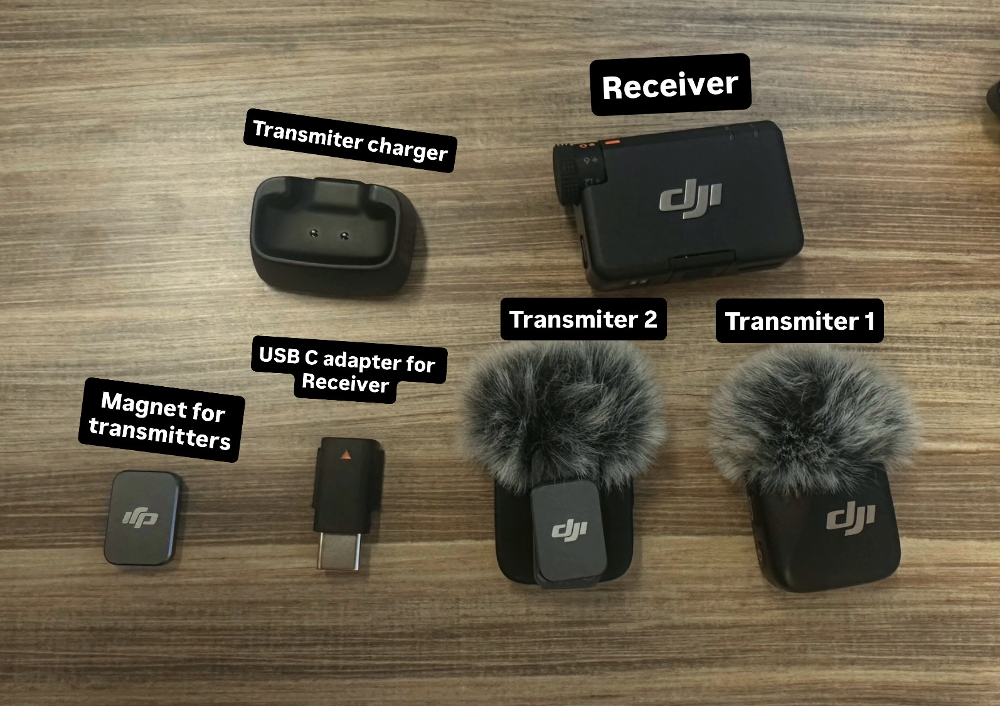

DJI Mic Mini Quick Start

How to use
- Turn on the receiver and the transmitter clip on mic. They pair automatically.
- Connect the receiver to your device.
- Phone: plug in the correct USB C or Lightning adapter.
- Camera: use the small audio cable from the receiver to the camera mic input.
- Computer: plug the receiver directly into a USB port and select it as the microphone in Sound Settings.
- Clip the mic to your shirt near the center of your chest. Keep the mic facing outward. Make sure clothing does not rub the microphone. Use the wind cover outside.
- Check levels. Speak normally and watch the audio bar on the receiver.
- If the bar reaches the end, lower the gain.
- On computer, choose the DJI Mic as the input device and adjust input level if needed.
- Record.
- Phone: open your camera or video app and record.
- Camera: record normally.
- Computer: open your recording or call program and select the DJI Mic as the input.
How to turn off
- Turn off the transmitter by holding the power button until the light goes out.
- Turn off the receiver by holding its power button until the screen turns black.
Power off before unplugging so the units disconnect cleanly.
Care tips
- Do not pull on cables. Hold the connector when unplugging.
- Let the mic air dry if damp before storing in the case.
- Avoid placing the mic under clothing layers that rub on it.
- Keep the wind cover stored when not in use so it does not get crushed.
- Do not bend the receiver plug while connected.
Common problems and fast fixes
- No sound on phone: unplug and plug the receiver back in, then reopen the camera app.
- No sound on camera: set the camera audio input to Mic.
- No sound on computer: open Sound Settings and choose the DJI Mic as the input.
- Distorted sound: lower gain on the receiver.
- Wind noise: use the wind cover when outside.